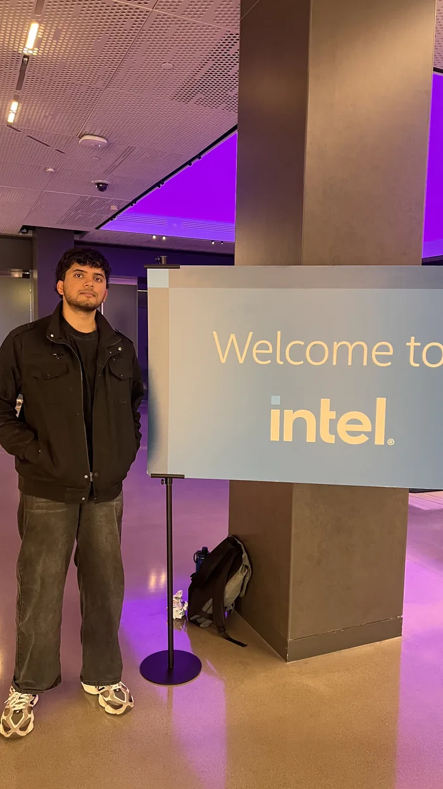
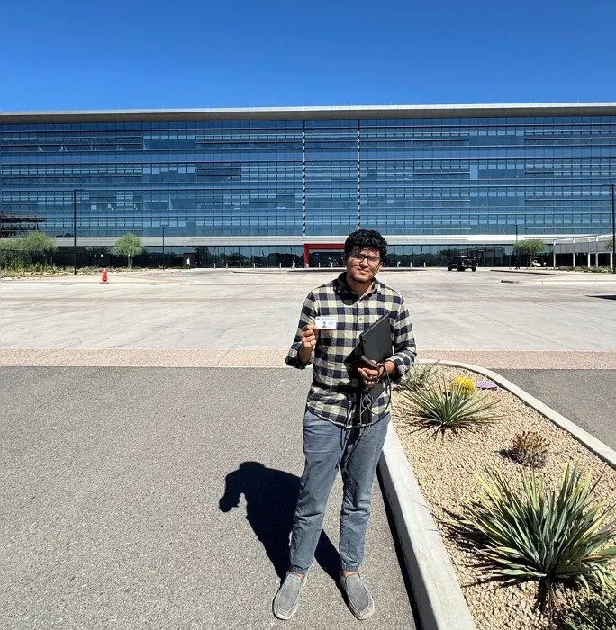
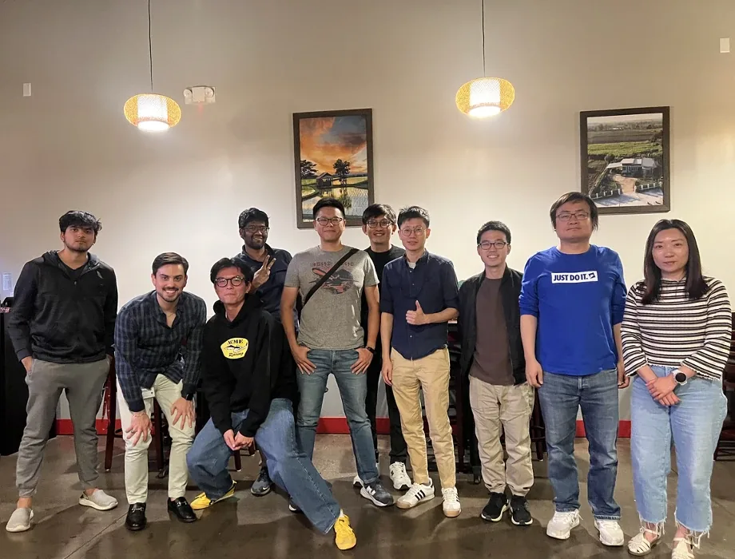
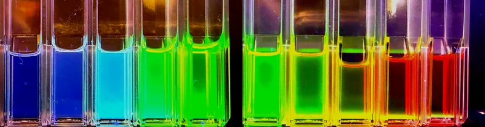
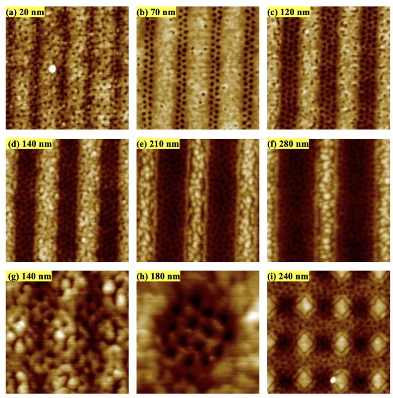
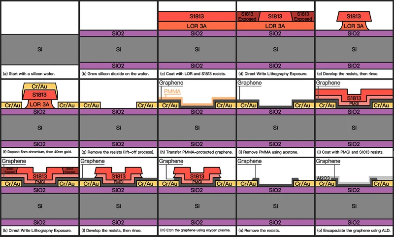
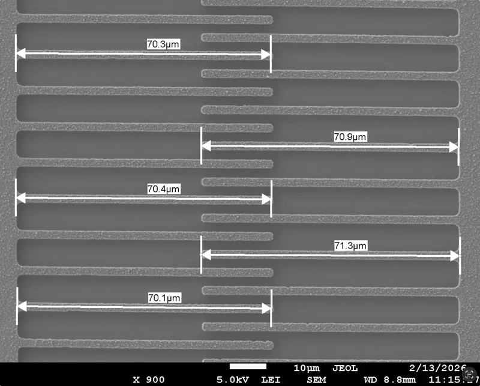
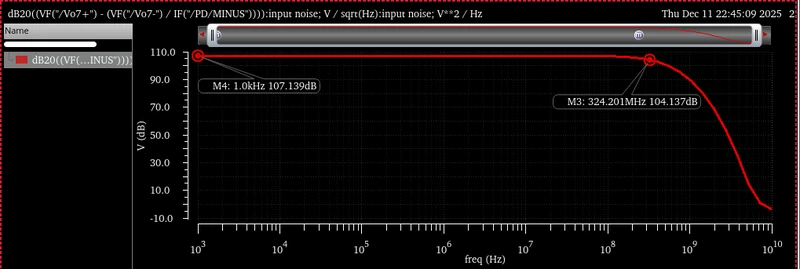
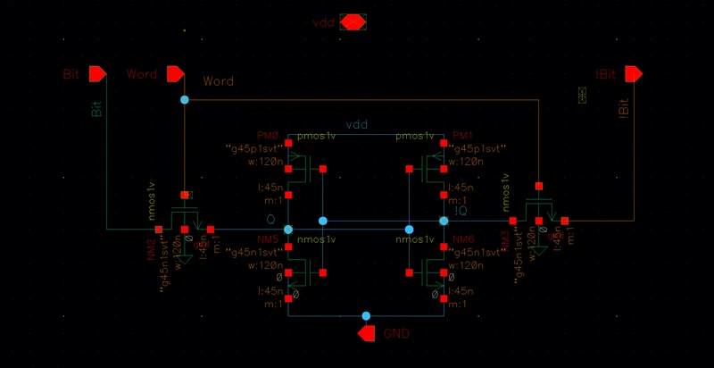

Portfolio · Philadelphia, PA
Silicon Design & Fabrication Engineer
From atoms to systems: nanofabrication, MEMS, analog and memory design, and two years ramping N4/N5 at TSMC.
01—About
I work where the fab meets the circuit.
I’m an MS Electrical Engineering candidate at the University of Pennsylvania (May 2027), focused on semiconductor design and fabrication. From 2023 to 2025 I was a Process Integration Engineer at TSMC Arizona’s Fab 21, integrating metal-gate and middle-end-of-line modules for N4/N5 products built for Apple, AMD and NVIDIA. In summer 2026 I interned at Intel as an analog/mixed-signal design engineer on the 18A node, correlating simulation with silicon.
That path taught me to read a TEM cross-section and a Spectre waveform the same way: as evidence. Recent work spans quantum-dot synthesis, block-copolymer lithography, graphene sensors, MEMS actuators, a 45 nm wideband TIA and a 6T SRAM.
Toolkit
- Design
- Cadence Virtuoso
- Spectre
- SPICE
- Verilog/SystemVerilog
- ADS
- Data
- JMP/JSL
- Python
- R
- MATLAB
- PyTorch
- Fab & metrology
- ALD
- EBL
- EUV lithography
- PVD/CVD
- Dry/wet etch
- SEM
- AFM
- TEM/FIB
- Process
- N4/N5 FinFET
- 18A GAA/RibbonFET
- FabTSMC Fab 21 — N4/N5
- DesignIntel — 18A
- NowPenn MSEE — 2027
- BeforeUBC BASc — Distinction
- AwardTSMC — First N5 NVIDIA product in Arizona
- StatusU.S. — Permanent Resident
02—Experience
Industry, at nanometer scale.
-
- Ran corner analysis and silicon debug across 15+ process flavors on Intel 18A, extracting parasitics to optimize power, performance, area and yield for foundational mixed-signal IP.
- Built an automated JMP pipeline that turns raw silicon frequency data into core analog parameters (gm, rout, Vt), accelerating simulation-to-silicon correlation and root-causing deviations.
- Performed statistical analysis and electrical failure analysis on digital linear voltage regulators (DLVR): reproducing failure signatures, validating dynamic load response and flagging instabilities.
- Correlated pre-silicon behavioral models with post-silicon data to isolate parasitic bottlenecks and leakage mechanisms and calibrate analog models.

Intel, summer 2026 -
- 01DOEDesigned and executed DOEs to evaluate skew sensitivity.
- 02JMPInline data correlation in JMP to flag process trends and leakage defects.
- 03TEMTEM and FIB cross-sections to validate inline metrology.
- Drove silicon debug and physical failure analysis for NVIDIA’s GB112 AI-server tape-out, root-causing replacement-metal-gate (RMG) failures to enable volume ramp at N4/N5.
- Owned middle-end-of-line modules (RPG, MPG, CMG), holding inline performance within 0.5σ of baseline across Apple, AMD and NVIDIA products.
- Led wafer-acceptance-test (WAT) and electrical-debug strategy with PRM and CPCM monitors, translating electrical signatures into targeted physical analysis.
- Ran DOEs on GB112 pilot lots and led the root-cause work that resolved critical WAT tool issues; drove continuous-improvement projects and Q-time experiments that cut rework.

TSMC Arizona 
With the TSMC Arizona team -
Coursework
- Nanoscale Science & Engineering
- Digital ICs & VLSI
- Analog ICs
- Computer Organization & Design
- MEMS/NEMS
- Nanofabrication & Nanocharacterization
-
Graduated with Distinction · Dean’s Honour List 2020–21 and 2022–23.
03—Featured experiment
Snap-in at 22.2 V
A lateral comb drive from our SOI MEMS run, imaged as the bias climbs. Displacement grows with V² until, between 22.0 and 22.2 V, it jumps from 5.5 µm to 11.0 µm and the fingers snap sideways.
Bias sweep · live readoutgap vs. bias, measured
Optical microscopy of comb drive b2 · ESE 5360 · with Krishna Madhur Akella
04—Selected work
Seven projects, four orders of magnitude.
Ordered from atom to system: a 4 nm nanocrystal, through devices and circuits, to a processor pipeline.

CdSe Quantum Dots
Hot-injection synthesis and size control
436 to 582 nmPeak emission, 8 s to 10 min (0.9 mL batch)

Directed Self-Assembly
Sub-20 nm patterning with PS-b-PMMA block copolymers
≈19 nmHalf-pitch (0.5 L₀) resolved in a 20 nm trench

Graphene FET pH Sensor
Fabrication, TLM extraction and liquid-gated sensing
1,545 cm²/V·sHole mobility

MEMS: Gyroscope to Silicon
Design, SOI fabrication and failure analysis
5 to 2.5 µmDevice layer: designed vs. fabricated

Wideband Transimpedance Amplifier
Optical-receiver front end · 45 nm CMOS · 1 V
160.9 kΩTransimpedance gain @ −3 dB (spec ≥ 150 kΩ)

16×4 6T SRAM
Memory array and peripherals · 45 nm
60.78 psWorst-case read access
RV32IM Pipelined Processor
5-stage pipeline with AXI4-Lite memory · SystemVerilog
5 stagesIF · ID · EX · MEM · WB
05—Contact
Let’s build what’s next in silicon.
Open to roles in silicon design, debug, failure analysis and product ramp.